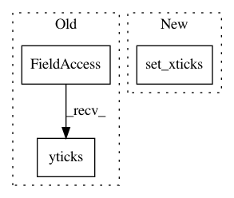

a37910cf0c8fbd1f863c058912571902198cad44,qanta/reporting/plotting.py,,plot_confusion,#Any#Any#Any#Any#,7
Before Change
plt.colorbar()
tick_marks = np.arange(len(labels))
plt.xticks(tick_marks, labels, rotation=45)
plt.yticks(tick_marks, labels)
plt.ylabel("True Label")
plt.xlabel("Predicted Label")
ax = plt.gca()
ax.grid(False)
After Change
ax.set_title(title)
// plt.colorbar()
tick_marks = np.arange(len(labels))
ax.set_xticks(tick_marks)
ax.set_xticklabels(labels, rotation=90)
ax.set_yticks(tick_marks)
ax.set_yticklabels(labels)
ax.set_ylabel("True Label")
In pattern: SUPERPATTERN
Frequency: 3
Non-data size: 3
Instances
Project Name: Pinafore/qb
Commit Name: a37910cf0c8fbd1f863c058912571902198cad44
Time: 2017-05-23
Author: ski.rodriguez@gmail.com
File Name: qanta/reporting/plotting.py
Class Name:
Method Name: plot_confusion
Project Name: DistrictDataLabs/yellowbrick
Commit Name: 37f4d560ee6420c1b1610476d801e747a44b5b36
Time: 2017-03-08
Author: rebecca.bilbro@bytecubed.com
File Name: yellowbrick/classifier.py
Class Name: ClassificationReport
Method Name: finalize
Project Name: theislab/scanpy
Commit Name: 8c00b4b5ee453e31a8bc70f36d50607cccb0902f
Time: 2017-07-31
Author: f.alex.wolf@gmx.de
File Name: scanpy/plotting/tools.py
Class Name:
Method Name: aga_path